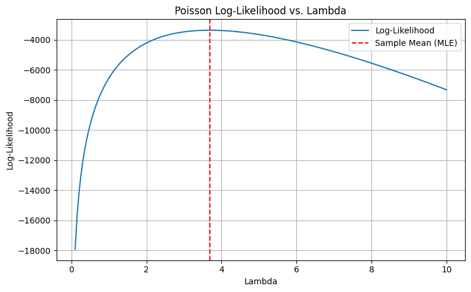
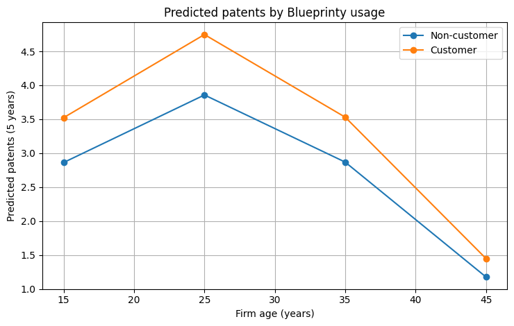

Blueprinty Case Study
Introduction
Blueprinty is a small firm that develops blueprint software for patent applications submitted to the U.S. Patent Office. Its marketing team wants to show that firms using the software are more successful in obtaining patent approvals. Ideally, this would be evaluated using approval rates before and after adoption, but such data are unavailable.
Instead, Blueprinty has data on 1,500 mature engineering firms, including the number of patents awarded over the past five years, region, firm age, and software usage. The goal is to assess whether software users receive more patents than non-users.
Objective
The objective of this project is to assess whether engineering firms that use Blueprinty’s software produce more patents than firms that do not, after accounting for firm age and regional location. The analysis aims to test whether the available data support Blueprinty’s claim that its software is associated with stronger patent performance.
Data Description
Descriptive comparison: patents by customer status
| Customer status | Group | Mean patents (5 years) |
|---|---|---|
| 0 | Non-customer | 3.473 |
| 1 | Customer | 4.133 |
Blueprinty customers have a higher average number of patents awarded over the past five years (4.133) than non-customers (3.473). This difference is descriptive and does not account for other factors such as firm age or region, which are addressed in the regression analysis.
Figure 1. Distribution of Patent Counts by Blueprinty Usage

The histogram shows a right-skewed distribution of patent counts, which is typical for count outcomes. Firms using Blueprinty’s software show a modest rightward shift, suggesting higher patent counts are somewhat more common among customers.
Descriptively, Blueprinty customers average 4.133 patents over five years versus 3.473 for non-customers. This comparison is correlational: customers are not randomly selected, and differences in firm age or region may explain part of the gap. The regression analysis tests whether the association remains after controlling for these factors.
Firm age by Blueprinty customer status
| iscustomer | N | Mean age | Median age | SD |
|---|---|---|---|---|
| 0 | 1019 | 26.10 | 25.50 | 6.95 |
| 1 | 481 | 26.90 | 26.50 | 7.81 |
Customer and non-customer firms have similar age distributions: customers are slightly older on average (26.90 vs 26.10 years) and have a slightly higher median age (26.5 vs 25.5). Age is therefore included as a control in the regression.
Region by Blueprinty customer status (counts)
| Region | Non-customer (0) | Customer (1) | Total |
|---|---|---|---|
| Midwest | 187 | 37 | 224 |
| Northeast | 273 | 328 | 601 |
| Northwest | 158 | 29 | 187 |
| South | 156 | 35 | 191 |
| Southwest | 245 | 52 | 297 |
| Total | 1019 | 481 | 1500 |
Customer status varies by region, with a large share of customers located in the Northeast. Because region is related to adoption, it is controlled for in the regression to reduce confounding.
Poisson Model Specification and Estimation
We model the number of patents awarded to each firm over a fixed five-year period. Because patents is a nonnegative count outcome, a Poisson model provides a natural starting point.
Let (Y_i) denote the number of patents awarded to firm (i) in the last five years. We assume:
[ Y_i () ]
where () is the expected number of patents per firm over the five-year window.
For a sample of (n) independent firms with observed counts (y_1, y_2, , y_n), the log-likelihood function is:
[ (y_1,,y_n) = -n+ ({i=1}^n y_i)() - {i=1}^n (y_i!) ]
We estimate () using maximum likelihood (MLE). This baseline model provides a benchmark before adding firm characteristics (e.g., Blueprinty usage, firm age, and region) in a regression framework.
Poisson log-likelihood and the MLE
Figure 2. Poisson Log-Likelihood vs. Lambda

This figure shows the Poisson log-likelihood as a function of \(\lambda\) for the observed patent counts. The log-likelihood is maximized at the sample mean, so the Poisson MLE is:
\[ \hat{\lambda} = \bar{Y}. \]
For independent observations \(y_1,\ldots,y_n\), the Poisson log-likelihood is:
\[ \ell(\lambda) = -n\lambda + \left(\sum_{i=1}^n y_i\right)\log(\lambda) - \sum_{i=1}^n \log(y_i!). \]
Differentiating and setting the derivative to zero gives:
\[ \frac{\partial \ell}{\partial \lambda} = -n + \frac{\sum_{i=1}^n y_i}{\lambda} = 0 \quad \Rightarrow \quad \hat{\lambda} = \frac{1}{n}\sum_{i=1}^n y_i = \bar{y}. \]
In this dataset, \(\hat{\lambda}=3.6847\), matching \(\bar{y}=3.6847\) up to rounding.
Poisson Regression Model
Next, we model five-year patent counts using a Poisson regression. Let \(Y_i\) be the number of patents awarded to firm \(i\) over the last five years:
\[ Y_i \sim \text{Poisson}(\lambda_i), \qquad \log(\lambda_i) = X_i^\top \beta, \]
equivalently \(\lambda_i = \exp(X_i^\top \beta)\). The covariate vector \(X_i\) includes firm age, age squared, region indicators, and Blueprinty usage (iscustomer).
Poisson regression (GLM) results
| Variable | Coefficient | Std. Error | z | p-value |
|---|---|---|---|---|
| Intercept | 1.3447 | 0.038 | 35.059 | <0.001 |
| Northeast (vs Midwest) | 0.0292 | 0.044 | 0.669 | 0.504 |
| Northwest (vs Midwest) | -0.0176 | 0.054 | -0.327 | 0.744 |
| South (vs Midwest) | 0.0566 | 0.053 | 1.074 | 0.283 |
| Southwest (vs Midwest) | 0.0506 | 0.047 | 1.072 | 0.284 |
Blueprinty customer (iscustomer) |
0.2076 | 0.031 | 6.719 | <0.001 |
Age (centered) age_c |
-0.0080 | 0.002 | -3.843 | <0.001 |
Age(^2) (centered) age_c2 |
-0.0030 | 0.000 | -11.513 | <0.001 |
Notes: Reference region is Midwest. Age is centered at the sample mean; age_c2 = age_c^2.
Holding firm age and region constant, Blueprinty customers have higher expected patent counts. The coefficient on iscustomer is 0.2076 (p < 0.001), implying an expected increase of about (e^{0.2076}-1 %) in patents for customers relative to non-customers.
Age shows a concave pattern: the negative linear and squared centered terms indicate that expected patent output declines with age and falls faster at higher ages (relative to the sample mean). Regional indicators are not statistically significant, suggesting no meaningful regional differences once firm characteristics are controlled for.
Figure 3. Poisson Regression Coefficients (95% CI)

The figure shows Poisson regression coefficient estimates with 95% confidence intervals (dashed line at 0 indicates “no effect” on the log scale). The iscustomer estimate is positive and its confidence interval does not cross zero, indicating a statistically significant association between Blueprinty usage and higher expected patent counts. Regional coefficients cluster near zero and their intervals overlap zero, suggesting no meaningful regional differences after controlling for other variables. The negative squared-age term indicates a concave relationship between age and patent output: patenting increases with age but at a diminishing rate.
Poisson Regression Results
| Term | Estimate | Std. Error | z value | p-value | 2.5% | 97.5% |
|---|---|---|---|---|---|---|
| const | -0.5089 | 0.1832 | -2.7783 | 0.0055 | -0.8679 | -0.1499 |
| age | 0.1486 | 0.0139 | 10.7162 | <0.001 | 0.1214 | 0.1758 |
| age_squared | -0.0030 | 0.0003 | -11.5132 | <0.001 | -0.0035 | -0.0025 |
| iscustomer | 0.2076 | 0.0309 | 6.7192 | <0.001 | 0.1470 | 0.2681 |
| region_Northeast | 0.0292 | 0.0436 | 0.6686 | 0.5037 | -0.0563 | 0.1147 |
| region_Northwest | -0.0176 | 0.0538 | -0.3268 | 0.7438 | -0.1230 | 0.0878 |
| region_South | 0.0566 | 0.0527 | 1.0740 | 0.2828 | -0.0467 | 0.1598 |
| region_Southwest | 0.0506 | 0.0472 | 1.0716 | 0.2839 | -0.0419 | 0.1431 |
Note: Coefficients are on the log scale. Exponentiating a coefficient gives the incidence rate ratio (IRR).
Figure X plots each coefficient estimate with its 95% confidence interval. The dashed vertical line at 0 represents no association on the log scale. Coefficients whose intervals do not cross 0 are statistically distinguishable from 0 at the 5% level.
The iscustomer effect is clearly positive and statistically significant, indicating higher expected patent counts for Blueprinty customers after controlling for age and region. Regional effects are small and not statistically significant. The positive age term and negative age_squared term indicate a concave relationship: expected patenting increases with age but the marginal gain declines at higher ages.
Model Implications
Model fit and assumptions The Pearson chi-square statistic relative to degrees of freedom is approximately (2070/1492 ), suggesting mild overdispersion. As a robustness check, we report results using robust (sandwich) standard errors; the main conclusion for iscustomer is unchanged.
Figure 4. Predicted Patents by Blueprinty Usage

This figure translates the Poisson regression into predicted five-year patent counts at representative firm ages. Across all ages shown, Blueprinty customers are predicted to produce more patents than comparable non-customers (holding other covariates fixed). The gap is largest in the mid-age range, consistent with the nonlinear age pattern captured by the positive age and negative age_squared terms.
Conclusion
Overall, these findings reinforce the value of Blueprinty’s software as a meaningful contributor to patent productivity. At the same time, they highlight the role of firm maturity in shaping innovation outcomes. While regional variation appears limited, the analysis underscores the importance of targeting firms at the right stage of development and aligning product value with their innovation capacity. These insights can guide Blueprinty’s strategic messaging and outreach efforts, particularly when engaging established firms seeking to strengthen their patent portfolios.